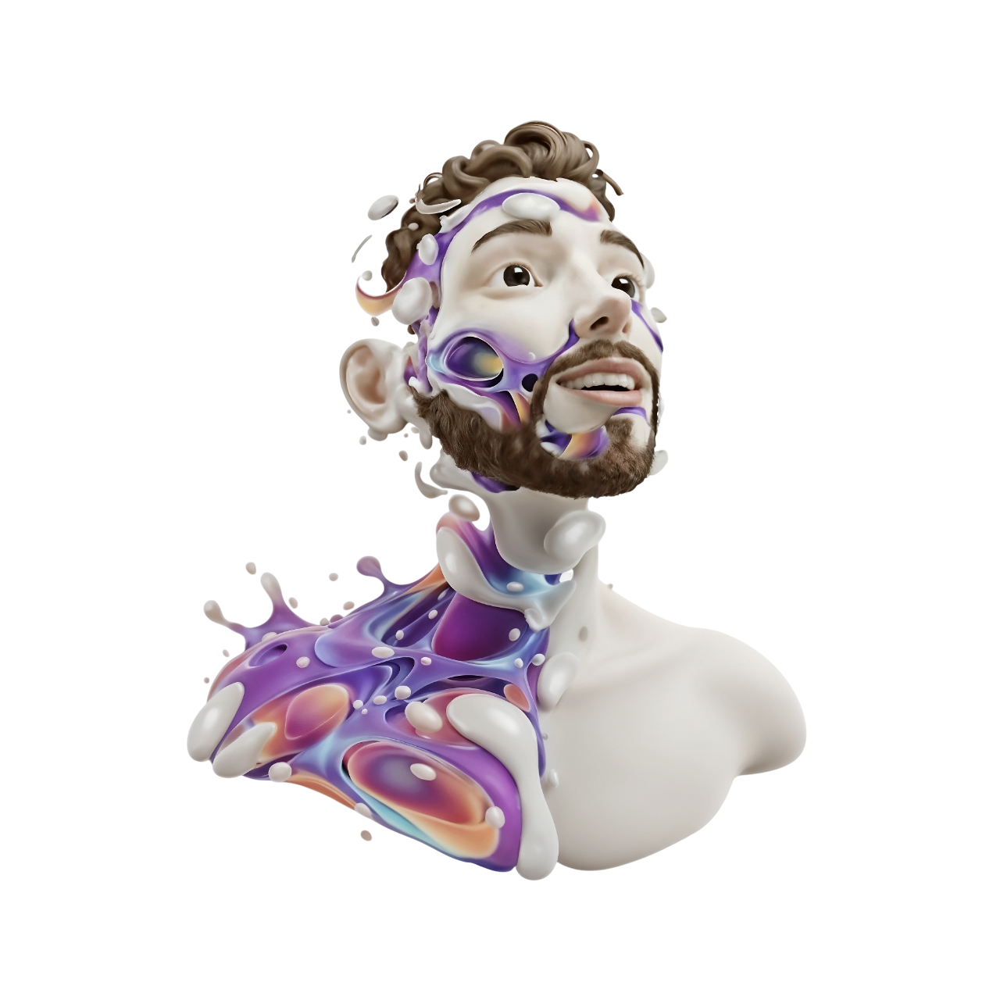
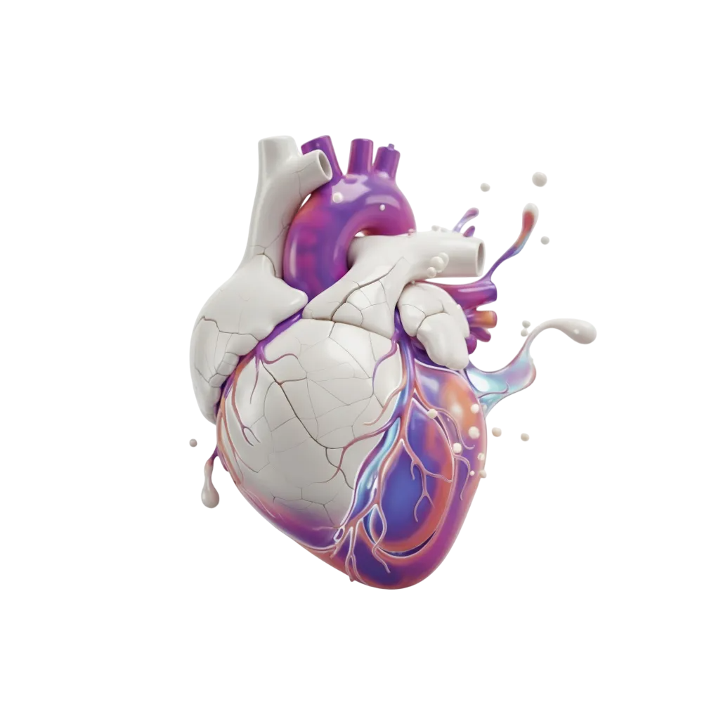
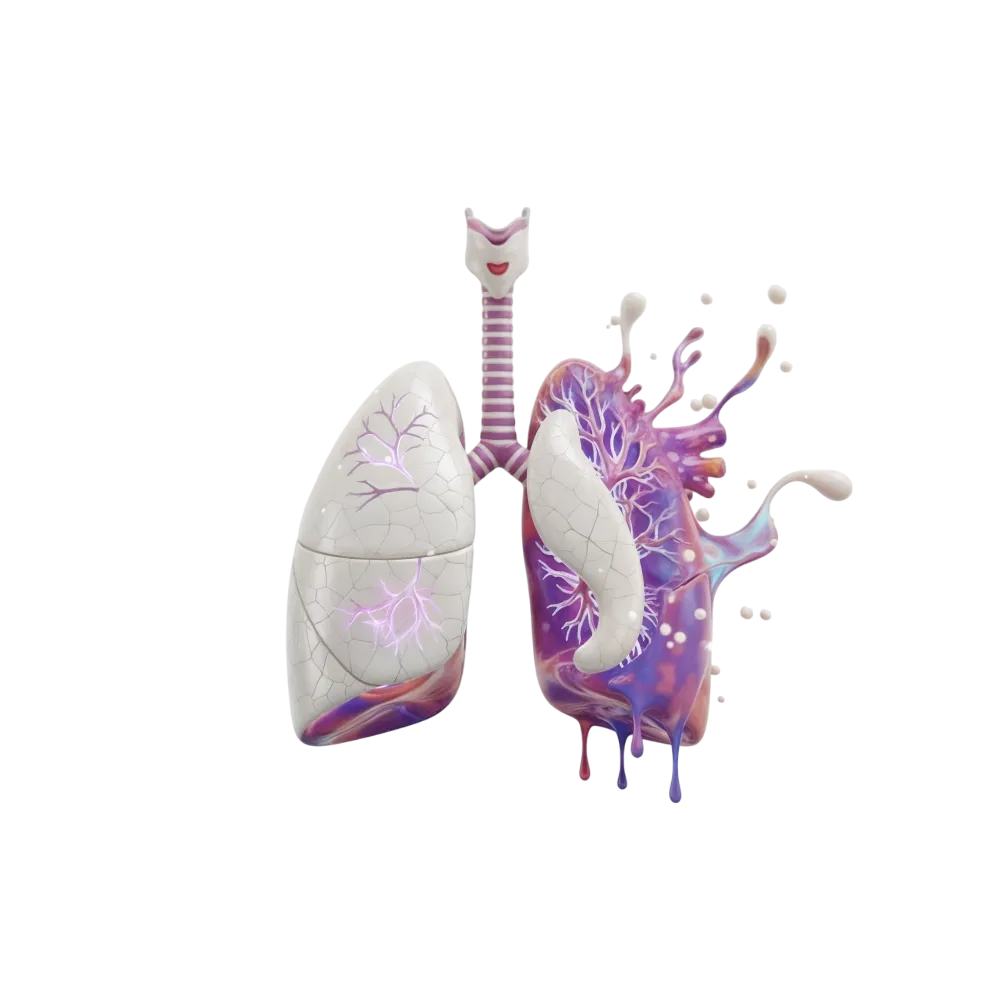
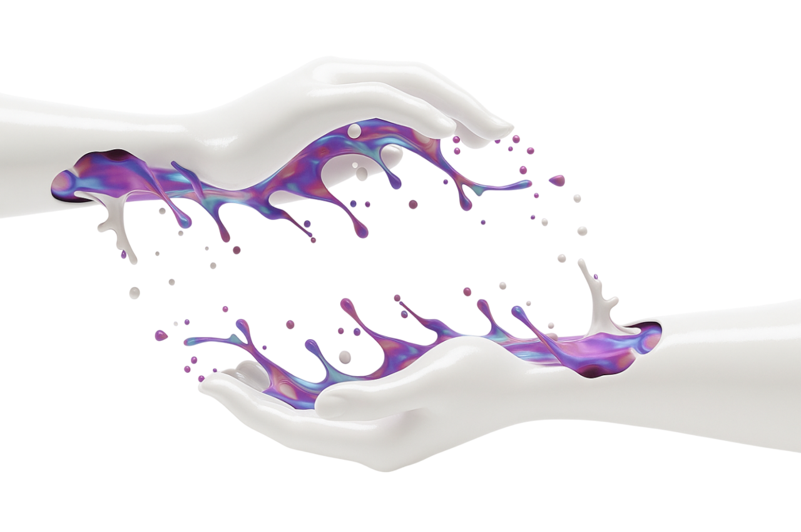
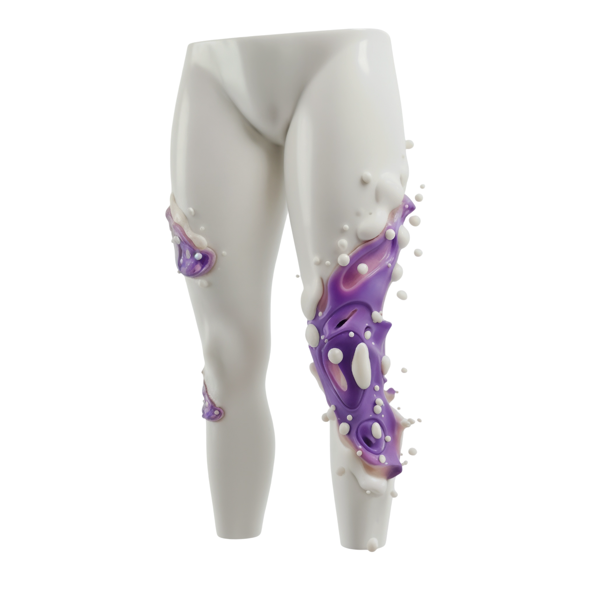

Currently in the 2nd year of a Computer Science degree at IUT of Lens, I aim to transform theory (the Head) into concrete projects. My goal is to design and create experiences that are both innovative and built on solid logic, promoting functional and sustainable code.
My Resume
Overview
See this website as my interactive resume, showcasing the skills I have developed. More than a CV, this portfolio is a reflection of my potential, demonstrating my ability to connect creativity with code to take on tomorrow's challenges.


The Heart
Passion
Logical Foundations & Design Theory
The Heart represents my passion for coding and the core principles of computer science and design. It forms the theoretical foundation of my studies: algorithms, data structures, software architecture, and design theory.
Creating my own applications and personal projects is the main driving force behind my learning process, allowing me to approach each challenge with unwavering determination.
My Academic Path
Education
My personal projects and the creation of my own applications are what inspire me to keep learning and allow me to take on each challenge with determination.
The Lungs
Vision
Continuous Learning & Innovation
The Lungs symbolize my ability to draw inspiration from new technologies and trends, adapting them to my development and design projects. I love exploring innovations, this continuous learning process fuels both my creativity and my technical growth.
Technical Update
Continuous Training
I continuously update my skills to master industry standards (Accessibility, SEO) and integrate next-generation tools into my projects.
Design & Architecture
App Development
I turn my inspirations into practical designs (UX/UI and software architecture), ensuring that each application is intuitive for the user and that its codebase remains well-structured for the development team.


The Hands
Projects
Academic & Personal Projects
The Hands illustrate the practical application of my knowledge. Here are a few projects from my academic journey and personal initiatives, where I combined code (the Heart) and design (the Vision).
LenSymphony (Musical Synthesizer)
An application that generates and plays sounds from musical notes, including frequencies, durations, audio effects, and harmonies. Objective: to understand digital sound synthesis and audio sample management.
Academic Project
Java
CineHub
A streaming-style platform for browsing, searching, and managing a list of movies and series, built with a Laravel backend (including database integration and API).
Ongoing (Academic)
PHP (Laravel)
Liquidia
A mobile and web application focused on cocktails, allowing users to browse and create recipes via an API. Objective: to work with Laravel and manage interactions between the front end and the API.
Ongoing (Academic)
PHP (Laravel)API REST
Water Management Application
An application for managing water distribution and consumption, including billing, monitoring, and readings. Objective: to learn CRUD logic and handle business-specific data management.
Academic Project
Java
Pac-Man
A recreation of the Pac-Man game featuring a graphical interface, collision handling, and basic ghost AI. Focus: object-oriented programming and JavaFX interface design.
Academic Project
JavaFX
Bomberman
A recreation of the Bomberman game, featuring bomb placement, explosions, and movement on a map. Objective: managing animations, collisions, and threads.
Academic Project
JavaFX
2048
A recreation of the 2048 game, featuring tile-merging logic and a minimal graphical interface. Goal: to work with grid logic and event handling.
Academic Project
Java
Lights Off
An addictive puzzle game where every click counts. Turn off all the lights and challenge your logical thinking! Purpose: to understand 2D arrays and graphical event handling.
Academic Project
Java
Chess Game
A simplified chess game developed in Java, designed to practice movement logic and victory conditions.
Academic Project
Java
UnOuiPourLaVie
A website themed around weddings, featuring an elegant and modern design to showcase a wedding or event organized by our fictional company.
Academic Project
HTML/CSS/JavaScript
ToDoApp
An application for managing tasks (add, delete, edit, sort), designed to handle daily to-do lists with a basic user interface.
Personal Project
Java
Tetris
A complete Tetris game developed with Pygame. Goal: to learn game logic, event loops, and collision handling.
Personal Project
Python (Pygame)
Flappy Bird
A simple arcade game where the player navigates a bird through gaps between pipes. Goal: to practice game mechanics, collision detection, and score tracking.
Personal Project
Python (Pygame)
Weather App
An application that displays a city's weather with animations and a clean interface.
Future Project
JavaScript/Weather API
Glassify (Spotify Alternative)
A music streaming application featuring a glassmorphism design and API integration to play tracks.
Future Project
JavaScript/React/Audio API
Bitmoji Generator
An application that transforms a user's photo into a Bitmoji-style avatar, similar to Apple Memoji.
Future Project
Python (AI)
Motus Game
A letter game where players guess the word within a limited number of attempts. Goal: to practice string logic and dynamic display handling.
Future Project
Java/JavaScript
The Legs
Skills
Technical Mastery & Frameworks
The Legs represent the tools and languages I can leverage for a project. They provide stability and enable me to progress in building robust applications, relying on the skills I acquired during my training.
Front-End
HTML & CSS
JavaScript
Back-End
Java
Python
PHP
SQL (MySQL or PostgreSQL)
Bash
Frameworks
Flask
Symfony / Laravel
Tools
Git / GitHub
Figma
JetBrains Suite
Trello
GanttProject

The Feet
Contact
Let's Take The First Step Together.
You've seen my vision (the Head), my passion (the Heart), my process (the Lungs), my creations (the Hands), and my foundations (the Legs).
I am currently looking for an internship or apprenticeship in development to apply my skills in a professional environment. Let's discuss how I can contribute to your team.